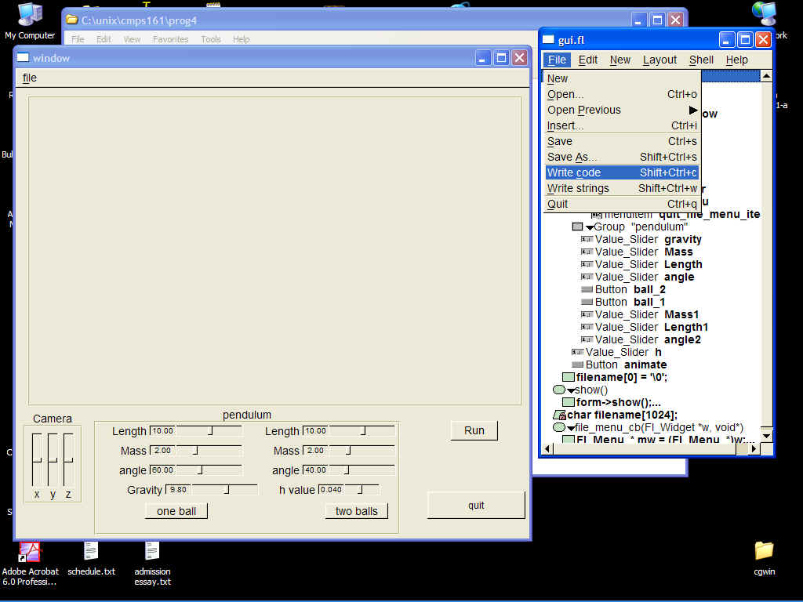
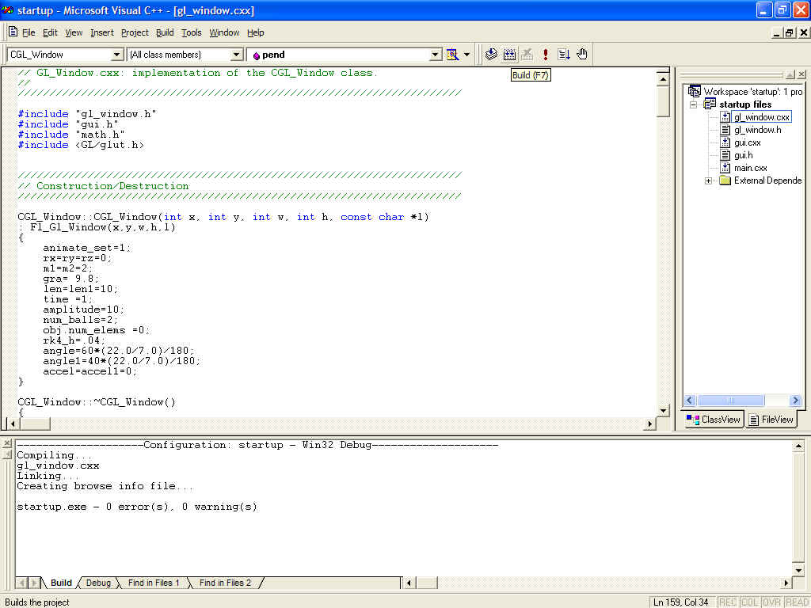
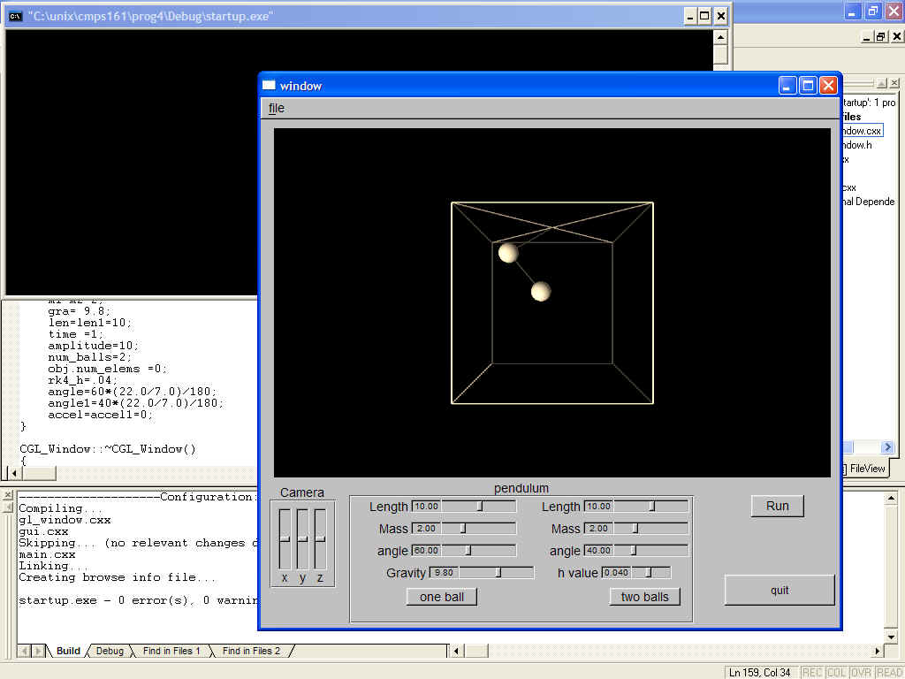

To use actual physics equations to simulate a single swinging pendulum and a chain linked pendulum. I obtained the physics equations from, single pendulum, double pendulum, web sights. I used the Runge-Kutta Algorithm to get an numerical approximation for the motion of the pendulum.
I developed the program in MS visual C++ 6.0 programming environment, and a unix programming environment. Before you build the program in unix or in MS visual C++ 6.0 , you must open up the gui.fl using fluid and use the write command located under the file menu. This will produce gui.cxx and gui.h.

Now that you have gui.cxx and gui.h you can build the project from the command line under unix. Assuming that the proper complier, fltk and openGL libraries are installed, you can simple type make at the command prompt in the directory the program files are located in. This will create "prog4", an executible program. In windows you have to load the project file then type f7 or click on the build button.

When the project is built it creates an executeible file that can be run by typing [control f5]. This will bring up the program.
You should now see something similar to this.

You have the choice to change via slider several different parameters about the pendulum. The gravity, length, mass are to be changed as the animation is running and the angle is to be changed while the animation is not running. The button on the right called run, starts and stops the animation. The camera x y z sliders allow the user to change the view. You can switch between one ball and two ball pendulums by clicking on the buttons.
I had serious problems calculating the two ball pendulum. From some unknown error the second ball appears to be gaining energy and transferring that energy to the first ball. Thus after a while the system gains to much acceleration, in ball two causing an explosion in the movement which is quite chaotic. I thought that the most likely sources for the error in calculation is the transfer from the double pendulum web sight equation into my implementation. After double checking my work I was still unable to find a problem. I checked the implicit casting from double to floats and that all seemed to be ok. After several hours of checking and double checking my work I moved on and left the problem unsolved.
PreCompiled version of the application Win32 Double_Pend